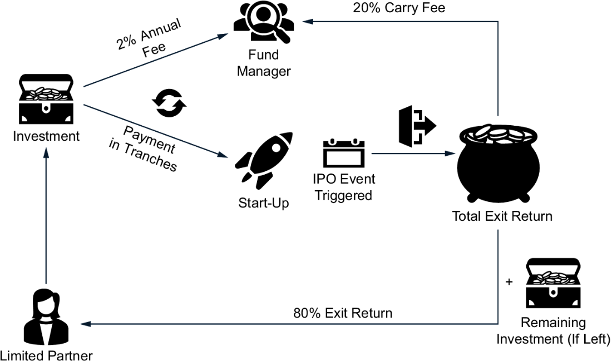
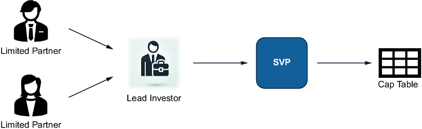

Many programmers contemplate starting a start-up at some point. Even if you haven’t considered creating one, you’ve likely had friends who have. Ambitious development teams can produce impressive products with minimal up-front costs, especially when working without salaries, but eventually, finances become a critical topic of discussion.
Working purely for equity, however, isn’t always enough to create a product. Some team members require immediate cash flow to meet living expenses, so salaries or invoicing for their contributions is necessary. While cloud providers may offer attractive starter packages, they typically don’t provide unlimited free resources. Additionally, acquiring and servicing clients incurs extra costs.
In this chapter, we turn the tables for those of you considering launching a start-up. Rather than examining start-ups from a programmer’s perspective—focused on attracting investors and meeting their expectations—we’ll adopt the investor’s viewpoint, assessing start-ups from a top-down, scenario-based approach. By investing money in a start-up, an investor receives a portion of the company in return, commonly referred to as equity. As this ownership isn’t traded on a public market like a stock exchange, ownership in a start-up is referred to as private equity. Let’s delve into how investors evaluate opportunities in private equity that comes from investing money in a start-up.
Investors have developed a model that illustrates the growth of start-ups, beginning with pre-seed and seed funding and progressing through various stages of development until an initial public offering (IPO). Each stage has specific challenges based on the start-up’s evolution. Let’s explore these phases. The goal of the subsequent sections is to view them from an investor’s perspective and highlight the differences from a founder’s perspective.
Imagine your friend Fred finally decides to take the plunge. He’s been discussing his start-up idea for months, and now he’s ready to create a minimum viable product (MVP) to validate it. Fred is committed to programming the backend and business logic, while his cofounder, Lin, a seasoned corporate professional like him, focuses on the frontend.
Neither expects a salary, but they have genuine expenses—such as cloud services, marketing, and sales—that they don’t want to shoulder alone. They reached out to family and potential investors. The investors declined, citing high risk, but family members contributed enough to assist with some of the costs.
Now, you meet them and pose the critical questions: How much cash do you need to advance your MVP? And more importantly, what’s in it for me if I provide you with at least part of the necessary funds?
If you recognize the potential in Fred and Lin’s start-up ideas, you may have a self-serving reason to invest. In 1981, a venture capitalist invested $1 million in a company for a 10% stake in the equity. This company went public in March 1986. Today, that investment would be worth billions of dollars. The company was Microsoft.
Of course, nobody can predict that Fred and Lin will step into the shoes of Bill Gates and Paul Allen, but let’s consider a scenario. What if you invested $10,000 for a 10% equity stake, and later someone else invested millions for an additional 10%? Even if Fred and Lin were “just” acquired in five years, this check could transform into life-changing wealth. This is the fundamental power of early-stage investing—recognizing potential before the world does. But before you write that check, let’s discuss how to evaluate such opportunities.
At the pre-seed stage, personal relationships frequently influence investment decisions. Founders typically approach friends and family first, not only for financial support but also for their endorsement of the vision.
Your perception of the founders plays a crucial role in shaping your understanding of them. Maybe you see Fred as a dreamer who has frequently misjudged situations. You know he has a family and can’t just quit his job. How long can he sustain working nights before reality forces him to give up? Or maybe Fred is that rare genius who can make anything happen—the person you’d regret not backing.
Additionally, the perception of the start-up’s business model can differ if you’re an investor rather than a founder. As a founder, you’re naturally more likely to be biased. You may have seen a market from the perspective of someone who has the desire to create something. Regardless, if you want to get rich or change the world, exploring your idea is different from exploring someone else’s. You can be hooked on a “why.” Perhaps as a founder, you believe in your start-up because you see your development skills as superior to others, or you believe in a yearlong observation that gradually completes a puzzle into a full picture of what the world needs. As an investor, you have a different perspective. Your focus is likely on the business model. The first question isn’t how to create a product—it’s how likely your investment will gain value. Your observation is narrower on questions such as network effects, scalability, and revenue growth opportunities, so you don’t need to worry as much about the details to get there. If you were a founder before and then became an investor, you’ll likely be surprised at how your focus changes.
Pre-seed investment is the ultimate high-risk, high-reward game. In many cases, it’s just enough cash to get the founders started. Sure, if your start-up founder turns out to be the next Steve Jobs, Bill Gates, or Jeff Bezos, your small check could be life-changing. But statistically, the odds aren’t in your favor.
Most of the time, you’ll never see that money again. So, the real question is this: Are you betting on a vision or just funding a friend’s expensive hobby?
Imagine receiving an invitation to join the panel to judge the final presentations of an incubation program. You find yourself among experienced investors, many of whom have business backgrounds rather than technical ones. If you had looked at their LinkedIn profiles, you would have noticed a common theme—advisory roles, connections with influential leaders, and proud mentions of their experiences with Fortune 100 companies. They speak a different language from the programmers you’re used to. They throw around terms such as venture growth, highlighting their speaking engagements and subtly (or not) displaying their networks.
The event begins. One by one, start-ups pitch their ideas, following a format that has been drilled into them by their mentors. They know they must discuss TAM, SAM, and SOM (see the NOTE box), as well as other metrics that investors expect to hear. Some pitches are promising, some are uninspiring, and some are downright painful to watch.
Note TAM, SAM, and SOM aren’t long-lost relatives of Donald Duck. The total addressable market (TAM) represents the global potential market for a product, whereas the serviceable available market (SAM) refers to the audience the product could reach. A serviceable obtainable market (SOM) is the portion of the addressable market that a business is likely to own. One challenge for investors is often the speculative nature of the numbers that start-up founders provide, which typically lack supporting evidence.
Now, the tables have turned. Founders are trying to impress you, and suddenly, you see things in a different light. Before you asked angels for investment, you had all the questions other angels might have had about your start-up.
At the pre-seed stage, investments are often made by personal friends, family, and close connections who believe in a founder’s vision. At the seed stage, the interactions are almost exclusively business-related. Investors want traction, real customers, and a scalable business model. Seed-stage start-ups need the following:
At this point, investors aren’t just betting on an idea—they’re assessing whether emerging businesses can grow into something big.
As a start-up grows, the risk of failure decreases, but at the same time, the funding requirements increase. While individual investors can still back pre-seed and seed rounds, later-stage start-ups require institutional investors to fuel their growth.
Once past the early stages, founders want to focus on their business, but raising money is an art. It requires access to a network of high-net-worth individuals, venture capital (VC) firms, and investment institutions specializing in scaling start-ups.
You might attract investors without going through an investment firm if you’re already a known celebrity or industry leader. But for most start-ups, funding isn’t just about the money—it’s about the network, expertise, and structured investment process that firms provide. Investment firms aren’t just check-writers; they act as agents for the start-up, helping with the following:
Start-ups follow distinct funding stages, each with a different focus. Let’s look at them next.
The company has not only hired employees but also acquired its first customers, learning how to manage them and continuously provide value. The focus is on refining the business model and scaling the product.
For founders, this is a crucial phase. They must work a lot, and there’s still a considerable risk of failure; most likely, the big VC firms aren’t yet interested in you. Most Series A companies aren’t profitable yet. Investors prioritize growth over profits at this stage. Companies with a higher burn rate—spending their investments more quickly—are especially pressured to advance to the next stage rapidly.
The start-up has a solid foundation and proven business model. The leaders shift their focus to expanding into new markets and optimizing monetization. The company’s style is evolving. From founders who do everything, the start-up establishes hierarchies and responsibilities.
However, working in a Series B start-up is still demanding. You have more precise goals and more apparent competitive strategies because you’ve discovered what works in the market and what doesn’t. You also know your real competitors on the market, and you need to incentivize your team to work hard to stay ahead.
Investors still prioritize growth, but managing burn rate has become increasingly critical. Investors still accept that the company isn’t yet profitable, but they expect to see a clear path to profitability.
When you reach Series C, you should have a stable niche in the market and be regarded as a key player there. In some exceptional cases, especially when your start-up is in a blue ocean market, being a market leader is the key to becoming a unicorn.
The company aims to expand internationally, enhance its technology, and acquire other start-ups. However, the primary goal is still a successful exit. In that case, an exit means that an industry giant acquires the start-up or the start-up goes public through an IPO, which means it becomes a publicly traded company and is listed on the stock market. Investors will benefit significantly from this, as their investment has been successful, and they can reap the rewards.
For many developers, discussing start-ups with venture capitalists or serial entrepreneurs can be a valuable and eye-opening experience. Unlike traditional businesses that grow organically, start-ups backed by investors are built with an exit in mind from day one. The term exit is often thrown around, but it can mean different things:
A successful exit is selling the company at a profit or transferring ownership to become a publicly traded company. Commonly, every founder celebrates every form of exit, but the successful ones do so more extensively. An exit means that you’ve started a business and ended it. A shutdown without an acquisition or a fire sale of the start-up is, strictly speaking, an unsuccessful exit, and investors will lose money. However, from a different perspective, taking the risk and becoming a founder is a strong commitment, and many factors—including pure luck—influence how a company will ultimately exit. Therefore, unsuccessful exits—some founders may use the term successfully failed—can be a badge of honor for founders. Many investors will value founders who have had only unsuccessful exits more than first-time founders who haven’t had any exits. Table 12.1 summarizes the four types of exits, along with a reference scenario, to help us understand what was happening.
|
Exit
|
Reference scenario
|
Returns
|
|---|---|---|
| IPO |
Company A is a Series C company. After long talks and planning with investment bankers, they finally announce their IPO. After the IPO, an investor can trade his ownership on the stock market. |
High |
| Acquisition |
Company B is sold to an industry giant for billions. Direct investors are paid out and make a huge profit. Limited partners (LPs) get their profits minus carry fee and their initial investment paid out. |
High |
| Fire sale |
Company C is a company in distress but can sell itself to another company. Unlike a successful acquisition, in a fire sale, the buyer’s investment is largely to pay off debts. The investors won’t receive their full investment back. |
Partial |
| Shutdown |
Company D is a company in distress but shut down. Unlike in the fire sale, no company wants to acquire the company. Maybe some equipment, such as computers and office equipment, can be liquidated, but investors will likely not receive any money. |
None |
But why is an exit so important? Investing in private equity means locking up money for years. Unlike stocks, which can be sold at any time, VC investments are typically illiquid. Investors take extreme risks, and many start-ups fail. Therefore, when a start-up exits successfully, the returns must be substantial to compensate for the failures and inflation. This explains the pressure for speed. For founders, it’s essential to understand why hardly any venture capitalist wants to invest in a company that is growing slowly and is already profitable. After all, the dividends are small, and a return on investment over many years isn’t what they have signed up for. A company with slow growth expectations doesn’t attract the attention of buyers.
If a start-up has no viable business model—something that is often unknown in advance—investors want to fail it quickly so they can refocus their attention on those start-ups with a viable business model. Investors who have enjoyed collaborating with the founding team that reached a later stage might even tell the founders to bring a new horse instead of riding a dead one. A fail-fast culture demands that time be minimized to achieve results and, in some cases, that we be able to try again soon.
From an investor’s point of view, if you want to get into VC, you need to shift your mindset. You need to ask different questions, such as these:
The last item highlights another practice, known as acqui-hire. Some investors might understand that your start-up won’t be the one that builds a product to become a market leader. However, at the same time, they recognize an immense shortage of qualified engineers, and a large company may pay millions to secure top engineers on its payroll.
Note Often, it doesn’t require building a highly profitable start-up, but rather solutions that can become highly profitable in the right hands. For some companies, a start-up with a solid product and capable engineers in a future market, such as quantum computing, can be highly valuable even if it generates no profits.
First, let’s ask the maybe most fundamental question when deciding whether to invest in start-ups: If you have money, why bet on such a risky venture as start-ups? Blue-chip stocks and diversified exchange-traded funds (ETFs) provide steady growth, dividends, and low risk. And as we’ve seen in this book, you can hardly go wrong with an index fund. After all, there’s a high chance that you’ll lose your entire investment in a start-up if it fails (and statistics indicate that 90% of them do).
Microsoft went public on March 13, 1986, for $21 per share. Through a stock split, that single share would now be equivalent to 288 shares. As of January 31, 2024, one share purchased at the IPO would be worth nearly $120,000. But if you had invested in Microsoft before it went public, you would get one share for even less than $21, and you can calculate many scenarios of how much money you could have made by being one of the first investors in such a company.
Someone needs to bring the next Microsoft to the stock exchange. If we imagine that all venture capitalists disappeared overnight, there would be no new businesses in the market to challenge the status quo. The countrywide innovation cycle would slow down because talented individuals with great ideas would no longer receive funding. A short window of opportunity often exists to launch a new concept in the market. If you’re too slow, the opportunity is lost. There’s no way innovation at scale can exist without VC.
Overall, we understand that if we find a future unicorn—a start-up valued at over a billion dollars—there is likely no other investment category in the world that offers returns comparable to those of an investment in a unicorn. For some angels, searching for potentially strong early-stage start-ups may still feel like playing the lottery, but the industry has evolved. Angels often form syndicates to evaluate promising start-ups together, thereby reducing their overall risk of failure. Increasingly, public funds are available for early-stage start-ups as countries recognize that this investment can yield significant returns. Even if founders can’t use the pre-seed or seed funding received from a sovereign fund or public investment program, young engineers who strive for success learn valuable lessons along the way, enhancing their worth in the job market. They may outperform their peers when entering a corporate job with their skills. Let’s examine the investment vehicles in detail.
Venture capitalists typically focus on start-ups in later stages—Series A, B, and beyond—where risks are lower and returns are still high. However, there are exceptions, such as incubators affiliated with elite universities, where the chances of discovering the next unicorn are significantly higher.
When discussing top-tier venture capitalists, specific names dominate the market, including Sequoia, Andreessen Horowitz (aka AH Capital Management, LLC, or a16z), Accel, Benchmark, Tiger Global, SoftBank, and many more. Be aware that smaller, emerging venture funds are also available.
Let’s say you have a five- or six-digit investment amount in your account and want to get in on the next WhatsApp-style deal. Why not simply contact one of these venture capitalists and secure a position? Bad news: it doesn’t work that way.
VCs primarily work with institutional investors, including pension funds, sovereign wealth funds, university endowments, and ultra-high-net-worth individuals (e.g., billionaires, rather than retail investors). If you’re a billionaire, exceptions might be made. Otherwise, they won’t take your call.
The good news is that fund managers run VC funds for large private investors. So, you might not call Sequoia directly and tell them you have some bucks to spare for one specific company, but you can look for pooled investments and find someone who collects investments from wealthy private investors. The minimum investment size is typically $100,000 or more, and it can sometimes exceed millions. There’s an annual management fee, most are about 2%. There’s a carry fee of 20%, which is a fee that is only paid on profits. If your investment generates $100,000 in profits, $20,000 is allocated to the venture capitalist. You receive the remaining $80,000, minus the initial investment and management fees. Figure 12.1 illustrates this flow of money in a simplified fashion. Remember that every fund will have more limited partners (LPs); in most cases, a fund invests in multiple start-ups. You should also be aware that more than one fund can invest in the same start-up.

Venture funds invest in multiple start-ups in parallel. Some of these companies will be in Series C rounds. Every fund manager will ensure that the founders make a substantial commitment to an exit. After all, fund managers will be pressured by investors, who want to see results for their 2% annual management fees. In most cases, investors will encounter some exits along the way, as the fund typically contains multiple start-ups.
Investing in VC funds requires a substantial amount of capital. But what do you do if you can’t afford the minimum ticket size? Does this imply that your chances of investing in a unicorn are slim unless you engage with them during the pre-seed and seed funding stages before institutional investors are on board?
While later-stage start-ups require significantly higher investments, it’s still possible to invest in them even with a smaller wallet. Angel investors can form a syndicate. In a syndicate, a seasoned lead investor identifies a start-up opportunity. The syndicate negotiates the terms and determines the amount of capital to raise from LPs.
Angel investors don’t have the same reach as established venture capitalists, who often have access to start-up incubators located near elite universities. They can rarely pool investors into a fund. However, angel investors often have a strong network and frequently collaborate with serial investors who cofound start-ups.
Note One typical network of angels is a diaspora from a particular country. For example, Armenia has a vast diaspora, especially in California. Many Armenians living in the United States with accumulated capital are attracted to invest in start-ups where the founders are in Armenia. This way, they can combine two things: making money and helping the country they originated from.
So, let’s say an angel has negotiated a deal with a start-up in which he wants to invest. The angel might be willing to invest $10,000, $50,000, or $100,000. However, a start-up needs more than that. The angel negotiates a deal with the start-up. The parameters of this deal include the desired check size, the timing of when the money is needed, and the amount of equity the investing entity would receive for that money.
The angel negotiating the deal connects with other angels through a network to become a lead investor in a jointly established Special Purpose Vehicle (SPV). An SPV is a legal entity, typically an LLC, created for a specific investment purpose. In VC, SPVs pool multiple investors into a single entity to invest in a start-up. Instead of each LP appearing on the start-up’s cap table, the SPV is the only investor listed, simplifying legal and administrative processes. Therefore, the lead investor’s role is to act as an agent (see figure 12.2). He provides capital to the start-up and must manage all the formalities associated with it.

Investors who join the SPV are referred to as LPs within that SPV. Being an LP in the SPV means that, as an individual, you don’t own equity in the start-up, but you do have a stake in the SPV. The SPV will be listed in the start-up cap table.
You can search for companies on platforms such as AngelList as an individual investor. You can also reach out to other angels on platforms such as LinkedIn. Angel investors often create a one-pager summarizing the investment opportunity. In this one-pager, you’ll find a summary of the company and its value proposition. You’ll learn about their story, what made them successful, who the leaders are, and what they want to achieve. The one-pager will outline economic moats and active users, as well as share insights about the management team.
Sometimes, if you approach angels, this one-pager looks more like a sales pitch. The angel list will share details about earlier investment rounds, as they will want to demonstrate that you’re not the first to believe in the start-up. The goal is typically an acquisition or an IPO, and the angel syndicate will share success stories of how an industry giant acquired a similar start-up with a comparable product in the past. This suggests that a successful exit can result in billions.
Like a VC, a syndicate looks for a minimum check size. If you exceed this size, you typically increase it in 10k steps. Each round has a closing, meaning the opportunity is gone if you decide too late.
A lead investor, who bears most of the work and expenses to set up the deal, needs to earn a return on their investment. In a VC, you have an annual management fee of 2%. However, with an investment in a single start-up, a yearly charge can become a challenge. Imagine that this start-up needs many years to go public, paying 2% interest nibbles away at much of your investment yearly. For this reason, syndicates often request a one-time payment. This can be around a $7,000 one-time pro rata charge. These charges cover all the expenses of a lead investor, as they also need to incur costs for contracts, travel expenses, and other related expenses to finalize the deal. Rarely is everything done with a quick online call; creating an agreement takes time and experience.
A lead investor who creates a syndicate wants to benefit from the start-up’s success. As with venture capitalists, a lead investor often requests a carry fee of 20%. The same rules apply as with VCs in that a carry fee is a charge on profits—no profit, no charge.
Some countries’ leaders establish Sovereign Wealth Funds (SWFs), state-owned investment funds that manage national wealth. Typically, these funds are sourced from government surpluses, revenues from commodities (e.g., oil, gas, and minerals), or foreign exchange reserves.
These funds can be valuable resources for start-ups. A country lacking natural resources requires investments to establish a start-up ecosystem that can compete internationally. Alternatively, consider petrostates that derive their wealth from oil and gas. These nations often seek to diversify their income sources, as the profits from oil and gas are inevitably finite.
Like VCs, it’s rare for individual investors to contribute to an SWF. However, many SWFs focus on developing a start-up ecosystem. You can explore start-ups created through an SWF and engage where it makes sense. From an investor’s point of view, you can explore which ecosystems sovereign funds invest in and if you can contribute as well.
Some investment decisions follow gut feelings. A charismatic and energized founder who is determined to do something great can be a decisive factor for an investment decision. After all, a saying goes that you invest as much in people as in the product. And as the start-ups have no history, and founders can’t guarantee that their ideas will be successful, how else can we decide but based on instinct?
However, there are various ways to use programming to make educated decisions. We look at some of them in this section.
Valuing start-ups is different from valuing established companies. Traditional valuation methods, such as price-to-earnings (P/E) ratios or Enterprise Value (EV), rely on stable cash flows and profits. However, many start-ups aren’t yet profitable and may have negative cash flow. Instead, investors rely on methods such as:
None of these methods can be used out of the box. We can’t apply the CCA method unless we have data on enough start-ups. Using expected returns as a basis is a risky approach. Almost every founder claims impressive figures, and without a critical review, start-ups might be overvalued. Due diligence can be expensive and complicated, as start-ups often lack the sophisticated accounting standards and accounting history of established companies.
While the DCF appears to be the most reliable method, we must still be aware that revenue growth is uncertain, and we continue to face high burn rates and variable expenses. In addition, in the early stages, the business models are often unproven. If it’s still unclear how a company generates its revenue, how can we accurately forecast its future cash flow?
Note Some start-ups try to do something utterly different, unlike anything that exists on the market. Consider geoengineering solutions to reverse climate change, which involve partly experimental approaches. While such cases require somewhat speculative models, investors still can define business models and estimate potential revenues. They add a markup for the risks of the idea not working.
Despite these challenges, DCF can provide a structured approach to estimating a start-up’s intrinsic value. Start-ups typically face high early-stage risk, so discount rates often range from 20% to 50%, which is significantly higher than those used for established businesses.
Let’s build a DCF model in Python, assuming a start-up expects to grow its revenue and eventually reach positive cash flow. We need to set up some assumptions:
The cash flow is calculated yearly as revenue minus expenses. Let’s look at listing 12.1 for the DCF. We first define the assumptions. Then, we use these inputs to project future earnings and return the results.
import numpy as np
years = 5 #1
initial_revenue = 500_000 #1
growth_rate = 0.3 #1
initial_expense = 700_000 #1
expense_reduction = 0.1 #1
discount_rate = 0.4 #1
cash_flows = [] #2
for t in range(1, years + 1):
revenue = initial_revenue * (1 + growth_rate) ** t #2
expense = initial_expense *
(1 - expense_reduction) ** t #2
cash_flow = revenue - expense #2
cash_flows.append(cash_flow) #2
terminal_growth_rate = 0.05 #3
terminal_value = cash_flows[-1] *
(1 + terminal_growth_rate) /
(discount_rate –
terminal_growth_rate) #3
discounted_cash_flows = [
cf / (1 + discount_rate) ** (t+1)
for t, cf in enumerate(cash_flows)] #4
discounted_terminal_value = terminal_value / (
1 + discount_rate
) ** years #4
startup_valuation = sum(
discounted_cash_flows
) + discounted_terminal_value #4
print(f"Estimated Startup Valuation: ${startup_valuation:,.2f}")
Unfortunately, inputting some numbers and receiving a precise number doesn’t always work. Formulas can become more complex than that. People may negotiate about the parameters. Some might argue that because a specific start-up operates in a high-risk industry, it should have a higher discount rate. Others might say that some figures in the planning documents are too speculative to yield substantial results.
In general, it’s difficult to quantify all possible risks. What if the principal founder leaves? What if a corporate giant suddenly brings a similar product to the market? What if there are macroeconomic shifts or unexpected tariffs that affect the world economy?
For many early-stage start-ups, valuation is merely a means to assign a numerical value to a company. Every founder wants to impress others with good numbers. As hardly anyone will acquire an early-stage start-up, nobody denies founders the right to boast about their creativity in front of other founders.
When a start-up seeks to raise money and negotiations with investors begin, the valuation serves as a baseline for further discussion. Then, the market will decide what investors are ready to spend.
Start-ups can raise multiple funding rounds at each stage of development. They can raise money through debt (borrowing money) or equity (selling ownership). Raising money through equity leads to dilution: preexisting owners will own fewer shares after an investment round unless they participate in the investment round themselves.
A founding round doesn’t mean the value of an earlier round decreases; if the company’s overall value increases, it also means that the value per share is increasing. After all, they use this money to enter new markets and acquire new clients. Let’s outline this in a simplified scenario:
Mark Zuckerberg started Facebook with 100% ownership. By the time of its IPO in 2012, his stake was just over 28%. Despite dilution, Facebook was worth $104 billion at the IPO, making Zuckerberg’s ownership worth billions. Dilution isn’t always bad—owning a smaller percentage of a highly valuable company is often better than owning 100% of a struggling one. Let’s use sample data to model dilution across multiple funding rounds in Python.
Note Some founders almost sabotage themselves with the idea that if they sell shares of their company, they will lose control over the product. If a founder is passionate about their product and expects a vision to be created in all the details as they imagine it, they might risk failure. Successful founders are deeply passionate about their business model.
Start-ups can’t treat funding rounds as an infinite moneymaking machine. Not only do owners’ stakes decrease, but investors who buy themselves in want to see a business that increases its earnings and is on the trajectory to profitability without requiring constant new investment rounds.
Let’s look at listing 12.2, which shows dilution. We use artificial data to demonstrate how the ownership percentage decreases.
import pandas as pd
total_shares = 1_000_000 #1
founder_shares = 500_000 #1
funding_rounds = [
("Seed", 500_000, 25), #1
("Series A", 2_000_000, 20), #1
("Series B", 10_000_000, 15), #1
("Series C", 50_000_000, 10) #1
]
dilution_data = []
for round_name, investment, equity_given in funding_rounds:
new_shares = (total_shares *
(equity_given /
(100 - equity_given))) #2
total_shares += new_shares #2
founder_ownership = (founder_shares /
total_shares) * 100 #2
dilution_data.append([round_name,
investment,
int(total_shares),
round(founder_ownership, 2)]) #2
df = pd.DataFrame(dilution_data,
columns=["Round", "Investment ($)", "Total Shares",
"Founder Ownership (%)"])
df
This sample illustrates that with each subsequent funding round, the total number of shares increases, while founder ownership decreases. Even though dilution happens, the start-up raises millions, fueling growth. Earlier investors and founders will own less over time, but their shares will be worth more.
Statistics indicate that only a small percentage of start-ups survive. As this book is about investing for programmers, and investing in start-ups is part of a comprehensive investment strategy, the question arises whether we can use programming skills to determine which start-up has a better chance of survival.
The smaller the start-up, the lower the chances of gaining significant insights through financial valuation. Let’s see if we can score start-ups through nonfinancial parameters as well.
The following subsections list the potential factors to consider in this evaluation. Some of the insights we can get through large language models (LLMs). Other data is also available from platforms such as LinkedIn or Crunchbase. In the following categories, we describe the insights that can be obtained and outline the possible steps a programmer can take to retrieve the information.
Each incubator or accelerator has a success rate. The more start-ups originating from them succeed, the better. Investors who narrow their search parameters only to integrate successful incubators or accelerators increase their chances of success. They might focus on start-up programs affiliated with elite universities. We can ask LLMs to provide us with a list of successful incubators and accelerators and use this information as weighted model parameters.
We can profile start-up founders and score them on various parameters. We can examine their overall experience in the businesses for which they plan to create their next start-up, and review where they studied and with whom they have previously worked. We’re also interested in their experience as founders and would like to know if they have had exits before.
We can gather a wealth of information about founders on LinkedIn or other platforms that contain data on professional achievements. We can also see if skills are missing in a founder team. It’s also helpful to examine the company’s advisors. In many cases, advisors with a solid track record on boards are a good sign.
If we know who has already invested in that company, we can build a scorecard by rating the existing investors based on their success rate. Platforms such as Crunchbase provide data on start-ups and their investors. Based on this, we can develop a scoring system that incorporates certain parameters, for example, the volume of past investments. We then score investors based on factors such as size, success rates, and other similar criteria.
If we know who their clients are, we can also forecast potential growth scenarios for start-ups. In many cases, collecting data about client collaborations would require access to confidential contracts, making it a topic of negotiation rather than a technical one.
Often, start-ups form strategic partnerships to expand and market their products. If a start-up collaborates with a major player in its field, this adds value. Still, both client relations and strategic partnerships are complex to rate, as many aspects are challenging to measure because various contracts and other documents related to collaborations may not contain commitments from both sides, but rather statements of intention.
Unicorns get their name because they are rare. Some countries attempt to breed unicorns, while others are less invested in this endeavor. You can look up the number of unicorns by country and the number of unicorns per million people. Countries such as Israel, for instance, do well.
There’s a catch if you look for “start-up nations.” Some start-up teams may originate from one country but incorporate in another due to tax reasons and access to markets. It’s no surprise that many founders of Delaware C corporations aren’t US residents. Still, knowing the country of origin of a start-up team can be one item on a scorecard.
Trends that dictate the focus of start-ups often depend on technological breakthroughs. In the early 2000s, numerous innovations enabled the creation of more advanced web pages, which we later referred to as Web 2.0. Start-up teams that were capable of adopting these technologies faster than their competitors had the potential to become hugely successful.
Following the release of the iPhone, numerous companies emerged to develop mobile apps. At the time of writing this book, if you look up start-up ideas, hardly anyone would recommend that you build apps. Now, the world is seeking innovations in quantum computing, AI, nuclear energy, improved storage technologies, and carbon capture. The times of consumer apps are over.
Domains can also be scored by risk. Think of domains in the early stages, such as geoengineering, in which you look for large-scale interventions to fix the climate or new nuclear reactor types. If companies in risky fields succeed, the rewards are higher.
Think of two categories of start-ups: a biotech company that researches new mRNA vaccines and an IT company that builds a new messenger platform that incorporates AI. We don’t need to guess which of these two start-ups will face heavy regulation and which one won’t. More regulations mean more risk.
Let’s stick with the example from the previous subsection and imagine the biotech company is successful, creating a new type of vaccine. Who faces more risks through competition? The IT company that builds a new messenger platform doesn’t have much room to defend itself from competitors. If a new start-up creates a better messenger platform, it might still fail. However, a successful biotech start-up, which has likely patented its products that contributed to its success, can’t be easily displaced from its success by a competitor. An economic moat isn’t always easy to quantify, but we can evaluate companies within their respective industries and explore various parameters to assess this key factor.
While we stick to our previous example, we can also take them as a reference for capital intensity and burn rate. The biotech company is likely capital-intensive. A significant amount of money is required for a lab and a minimum staff size. They would also have to spend a considerable amount of money on equipment and likely hire patent lawyers and officers who are well-versed in regulations, ensuring that all trials run smoothly. Compare this to IT companies that need budgets for notebooks and some cloud services to get started. They often need to spend money on licenses, as many tools are open source.
Capital intensity is often also expressed using a metric called burn rate, which refers to the amount a start-up spends in a given period. Start-ups with a high burn rate and a lengthy path to profitability are inherently risky.
First-time founders might wonder what app to build. Experienced founders may wonder how to monetize their business model. As investors, we can adopt a more informed approach to evaluate business models, as our destiny doesn’t depend on them, which makes it easier to differentiate between the product being created and its monetization.
Investors such as Peter Thiel view the network effect as essential. Facebook, for example, is a product that started small and focused on a specific scenario. However, with a blue ocean market ahead of them, they were able to scale worldwide, as suddenly everyone gravitated toward a product that allowed them to present themselves to the world.
Perhaps it’s harder today to build a new social media platform, as the market is already saturated. However, every investor dreams of finding a product that not everyone has, but where it’s certain that it’s only a matter of time until everyone wants it.
You can ask a founder the question, “What is the one metric you keep screening and that will make you smile once it reaches a certain milestone?” For a social media company, it might be 1 million subscribers. For a company selling products, the customer acquisition costs might be below x USD.
Each domain may have a different North Star Metric. If you find these metrics, you can likely monitor their chance of a breakthrough over time.